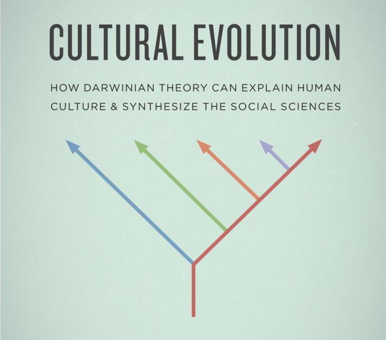

10 min read

Let's talk a bit about cultural evolution to find out why this idea is so important.
First of all, what do we mean by “culture”?
Wikipedia's entry offers a useful summary:
[Culture encompasses]… the range of phenomena that are transmitted through social learning in human societies. The concept of material culture covers the physical expressions of culture, such as technology, architecture and art, whereas the immaterial aspects of culture such as principles of social organization (including practices of political organization and social institutions), mythology, philosophy, literature (both written and oral), and science comprise the intangible cultural heritage of a society.
In other words, culture consists of the knowledge, beliefs, artifacts, attitudes, practices, and institutions that are shared by a group of people, and transmitted socially between members of that group.
When we think about a definition like this, one thing becomes clear pretty quickly: most of what makes up our daily lives as human beings falls somewhere into this cultural category. Remove these cultural elements – language, science, buildings, tools, food preparation techniques, social norms, works of art – and whatever we have left is something most of us would barely recognize as human.
I recently made a point of rewatching the 1970 film by François Truffaut, The Wild Child. Truffaut's narrative was based on a true story of a French doctor who, in 1798, took in a boy of 11 or 12 who had grown up in the forest, without any sort of human contact. The child was first placed in a home for deaf mutes, with doctors assuming that his inability to speak or react to human speech was due to some physical and/or mental incapacity. However Dr. Jean Itard, played by Truffaut, had a different idea, and persuaded the authorities to allow the boy to live with him. The film then follows the boy's slow but evident progress as Dr. Itard invests the time and effort necessary to teach the boy the basics of life in human society.
The film's message is clear: whatever we think it means to be human, we are not born that way, but only achieve some measure of humanity to the degree that we are carefully raised and socialized by other caring humans.
Of course, almost all of us are brought up within some particular human culture. At first, we have our hands (and minds!) full just learning that one culture in which we were raised. If that education is successful, then we reach a point at which we take most cultural elements for granted: like a fish swimming through the ocean, we move through the culture that surrounds us, giving it no more thought than the fish gives the water in which it lives.
At a later stage in our development, though, we may perhaps notice that the cultural elements we've taken for granted are not fixed in stone. Here's the way Steve Jobs phrased it:
When you grow up you tend to get told that the world is the way it is and your life is just to live your life inside the world. Try not to bash into the walls too much. Try to have a nice family, have fun, save a little money.
That's a very limited life. Life can be much broader once you discover one simple fact: Everything around you that you call life was made up by people that were no smarter than you and you can change it, you can influence it, you can build your own things that other people can use.
And here's a historian's perspective on the issue, from Yuval Noah Harari's book Sapiens: A Brief History of Humankind:
The heated debates about Homo sapiens' ‘natural way of life’ miss the main point. Ever since the Cognitive Revolution, there hasn't been a single natural way of life for Sapiens. There are only cultural choices, from among a bewildering palette of possibilities.
And here's a relevant observation by Eamonn Kelly, a strategic business consultant, from his book Powerful times: Rising to the Challenge of our Uncertain World:
Perhaps the greatest cognitive barrier we face in making sense of the world is that we have come to view certain realities as part of a ‘natural order’ that will remain unchallenged. In fact, many ‘fundamental truths’ that we take for granted are simply the fragile constructs of history and could shift radically in the decade ahead.
Of course culture is often dependent on the part of the world in which we happen to find ourselves. And it can also vary from group to group within a region: a company can be said to have a certain corporate culture, for example.
As we look back over the course of human history, however, the works of anthropologists and historians tell us that cultures have also changed over time. Discoveries have been made. Inventions have been created. Vehicles have been designed, built and used for transportation. Words have been added to our languages. Books have been written. New means of communication have been constructed. Buildings and institutions have been erected. Roads, bridges and dams have been built. Wars have been fought, and invasions have occurred. New forms of social organization have been launched.
As we study the broad pattern of these sorts of changes over long periods of time, one may gradually observe that they seem to follow many of the same patterns that occur in biological evolution. In other words, various cultural elements change over time to provide humans with better adaptations to their environments, and various cultures compete with one another, with the cultural elements providing the best environmental fit generally predominating over others that work not quite so well.
In other words, cultures don't merely change – they evolve.
Here's how Professor Jürgen Klüver describes it, from a report in 2008:
Many biologists and social scientists have noted that with the development of human culture, the biological evolution of Homo sapiens was usurped by socio-cultural evolution. The construction of artificial environments and social structures created new criteria for selection, and biological fitness was replaced by ‘cultural fitness’….
And many observers note that this ability to leverage cultural evolution has given humanity a decisive advantage in our competition with other species. Here's how Edwin G. Pulleyblank puts it, in a book from 1989:
Our capacity, through language, to manipulate the mental world and so deal imaginatively with the world of experience has been a major factor, perhaps the major factor, in giving humans the overwhelming advantage over other species in terms of cultural, as opposed to biological, evolution.
While at times we may consider each cultural strand in isolation from others, there often seems to be an interrelationship between them. As our understanding of the universe has grown through scientific discoveries, for example, that understanding has in turn influenced our religious beliefs and social institutions. As machines have been developed to perform work requiring physical strength, the nature of work has shifted, resulting in broader and deeper education throughout society. As technology and industry have brought greater prosperity to more of society, our respect for the value of individuals within those societies has grown.
Here's a comment from Harari, again from Sapiens, describing how some of these strands have tied together:
Myths, it transpired, are stronger than anyone could have imagined. When the Agricultural Revolution opened opportunities for the creation of crowded cities and mighty empires, people invented stories about great gods, motherlands and joint stock companies to provide the needed social links. While human evolution was crawling at its usual snail's pace, the human imagination was building astounding networks of mass cooperation, unlike any other ever seen on earth.
Taking all of this into account, some observers have noted that these various strands of human culture have coevolved through a series of developmental levels. You can read more about these here:
“Developmental Levels” - A brief overview of developmental levels as described by Clare W. Graves, Don Beck, Chris Cowan and Ken Wilber.
“Developmental Levels as Evolving Social Structures” - A view of developmental levels as a series of evolving social structures.
These levels really represent different patterns of human engagement, all of which are still in operation today, in all of our societies, and so an understanding of these levels/patterns can help us all better understand how and why humans interact in various ways.
So how are we to think about human culture, and our role in it?
To some extent, of course, we are all part of a culture created by others who preceded us, and we would be nothing without these cultural gifts that have been handed down to us.
As Dr. Martin Luther King Jr. put it, in a sermon on “Conquering Self-Centeredness”:
No matter where you stand, no matter how much popularity you have, no matter how much education you have, no matter how much money you have, you have it because somebody in this universe helped you to get it. And when you see that, you can't be arrogant, you can't be supercilious. You discover that you have your position because of the events of history and because of individuals in the background making it possible for you to stand there.
Albert Einstein took this thinking a bit farther, reflecting not only on our fortunate heritage, but the obligations such gifts impose upon us:
How strange is the lot of us mortals! Each of us is here for a brief sojourn; for what purpose he knows not, though he sometimes thinks he senses it. But without deeper reflection one knows from daily life that one exists for other people – first of all for those upon whose smiles and well-being our own happiness is wholly dependent, and then for the many, unknown to us, to whose destinies we are bound by the ties of sympathy. A hundred times every day I remind myself that my inner and outer life are based on the labors of other men, living and dead, and that I must exert myself in order to give in the same measure as I have received and am still receiving….
Novelist Kurt Vonnegut further commented on our ability to change our own culture:
It's only recently that I've come to understand that writers are not marginal to our society, that they, in fact, do all our thinking for us, that we are writing myths and our myths are believed, and that old myths are believed until someone writes a new one.
And, finally, famed cultural anthropologist Margaret Mead weighs in:
Never doubt that a small, group of thoughtful, committed citizens can change the world. Indeed, it is the only thing that ever has.
In summary, here are a number of ideas I've presented that are all tied to the topic of cultural evolution.